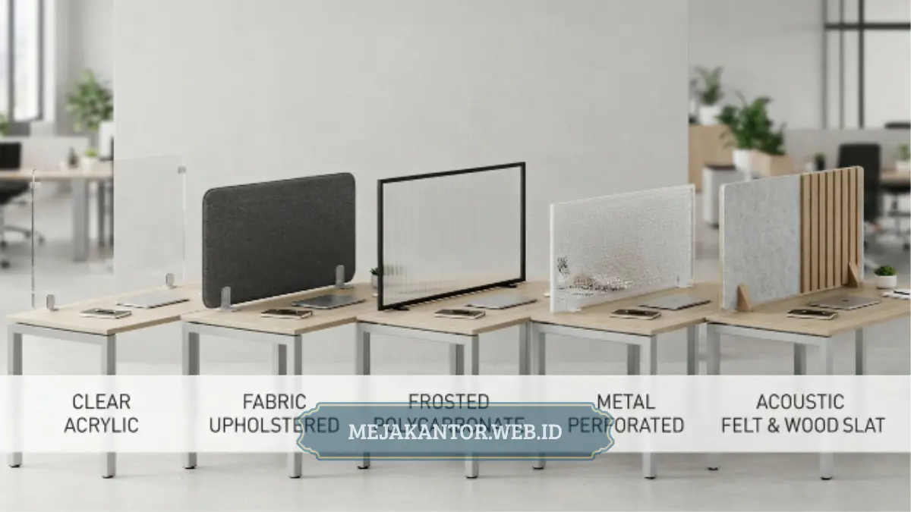

Partisi workstation adalah panel pembatas yang dipasang di antara meja kerja untuk memberi privasi visual, mengurangi kebisingan, dan membantu karyawan fokus di ruang kantor open plan. Artikel ini membahas lima jenis utamanya beserta cara memilihnya.
- Partisi workstation berfungsi membatasi ruang kerja individu tanpa membangun sekat permanen.
- Lima jenis yang paling umum adalah partisi kain, kaca, melamin/HPL, akustik, dan kombinasi kaca-melamin.
- Pemilihan jenis partisi sebaiknya mempertimbangkan tingkat privasi, kebutuhan akustik, anggaran, dan estetika ruangan.
- Kesalahan paling sering terjadi adalah memilih tinggi partisi yang tidak sesuai fungsi ruang.
- Partisi workstation umumnya lebih hemat biaya dan lebih fleksibel dibanding sekat ruangan permanen.
Daftar Isi Artikel
- Apa Itu Partisi Workstation?
- Mengapa Partisi Workstation Penting untuk Produktivitas Kantor?
- 5 Jenis Partisi Workstation yang Umum Digunakan di Kantor Modern
- Bagaimana Cara Kerja Partisi Workstation dalam Menata Ruang Kantor?
- Apa Saja Faktor yang Perlu Dipertimbangkan Sebelum Memilih Partisi Workstation?
- Kesalahan Umum saat Memilih Partisi Workstation
- Tips Memilih Partisi Workstation yang Tepat untuk Kantor Anda
- Perbandingan Partisi Workstation vs Sekat Ruangan Permanen
Apa Itu Partisi Workstation?
Partisi workstation adalah elemen furnitur berupa panel tegak yang dipasang pada sisi atau sekeliling meja kerja untuk memisahkan area kerja satu karyawan dengan karyawan lain. Fungsi utamanya adalah menciptakan batas visual dan fisik tanpa harus membangun dinding permanen.
Di kantor dengan konsep open plan, partisi workstation menjadi solusi paling umum untuk menyeimbangkan kebutuhan kolaborasi tim dengan kebutuhan privasi individu. Panel ini biasanya dipasang menempel langsung pada rangka meja atau berdiri sendiri di antara dua unit meja yang berhadapan.
Selain fungsi pembatas, partisi workstation juga sering dimanfaatkan sebagai media untuk menempelkan catatan kerja, memasang lampu meja tambahan, atau menyembunyikan kabel dan colokan listrik agar area kerja tetap rapi.
Mengapa Partisi Workstation Penting untuk Produktivitas Kantor?
Partisi workstation penting karena membantu mengurangi gangguan visual dan suara dari lingkungan sekitar sehingga karyawan dapat lebih fokus menyelesaikan pekerjaan tanpa terlalu banyak terdistraksi rekan kerja di sekitarnya.
Ruang kantor tanpa sekat cenderung membuat karyawan mudah teralihkan perhatiannya oleh aktivitas rekan kerja lain, mulai dari percakapan, panggilan telepon, hingga lalu lalang orang. Kondisi ini secara umum dapat menurunkan tingkat konsentrasi, terutama untuk pekerjaan yang membutuhkan analisis mendalam atau ketelitian tinggi.
Dengan adanya partisi, setiap karyawan memiliki area kerja yang terasa lebih personal meskipun tetap berada dalam satu ruangan besar. Hal ini juga membantu menjaga kerapian meja karena barang-barang kerja tidak terlihat langsung oleh meja di sebelahnya.
Dari sisi manajemen ruang, partisi workstation memungkinkan perusahaan menata banyak titik kerja dalam luasan terbatas tanpa harus membangun ruangan-ruangan kecil yang memakan biaya konstruksi lebih besar.
5 Jenis Partisi Workstation yang Umum Digunakan di Kantor Modern
Terdapat lima jenis partisi workstation yang paling umum dipakai di kantor modern, yaitu partisi kain, partisi kaca, partisi melamin atau HPL, partisi akustik, dan partisi kombinasi kaca-melamin, masing-masing dengan karakteristik dan kegunaan berbeda.
Partisi Kain (Fabric Panel)
Partisi kain menggunakan lapisan kain sebagai permukaan utama yang dibalut pada rangka panel. Jenis ini paling sering ditemukan di kantor karena bobotnya ringan, harganya relatif terjangkau, dan mampu menyerap suara lebih baik dibanding material keras seperti kaca atau melamin.
Warna kain yang bervariasi juga memudahkan penyesuaian dengan identitas visual perusahaan. Kekurangannya, permukaan kain lebih rentan kotor dan memerlukan perawatan tambahan seperti vacuum berkala.
Partisi Kaca (Glass Panel)
Partisi kaca memberikan kesan ruang kerja yang lebih terbuka dan modern karena tetap memungkinkan cahaya alami masuk serta menjaga garis pandang antar karyawan. Jenis ini banyak dipilih untuk kantor dengan konsep desain minimalis atau korporat.
Meski tampilannya elegan, partisi kaca umumnya kurang optimal dalam meredam suara dan harganya cenderung lebih tinggi dibanding partisi kain, terutama bila menggunakan kaca tempered untuk faktor keamanan.
Partisi Melamin atau HPL
Partisi berbahan melamin atau HPL (High Pressure Laminate) menawarkan permukaan yang keras, mudah dibersihkan, dan tahan terhadap goresan ringan maupun kelembapan. Jenis ini cocok untuk kantor yang mengutamakan daya tahan jangka panjang.
Pilihan motif dan warna pada partisi HPL juga cukup beragam, mulai dari warna solid hingga motif serat kayu, sehingga mudah dipadukan dengan desain meja kantor yang sudah ada.
Partisi Akustik
Partisi akustik dirancang khusus dengan material peredam suara yang lebih tebal dibanding partisi kain biasa. Jenis ini paling cocok digunakan di ruang kerja yang membutuhkan tingkat konsentrasi tinggi atau sering melakukan panggilan telepon dan meeting singkat di meja masing-masing.
Karena strukturnya lebih kompleks, partisi akustik umumnya dibanderol lebih mahal dibanding jenis partisi kain standar, namun manfaatnya terasa signifikan pada kantor dengan tingkat kebisingan tinggi.
Partisi Kombinasi Kaca-Melamin
Partisi kombinasi menggabungkan bagian bawah berbahan melamin atau HPL dengan bagian atas berbahan kaca. Desain ini mempertahankan privasi fisik pada area kerja meja sambil tetap membiarkan cahaya dan pandangan tetap terhubung di bagian atas.
Jenis ini sering menjadi pilihan tengah bagi kantor yang ingin tampilan modern tanpa sepenuhnya kehilangan kesan terbuka dari konsep open plan.

Bagaimana Cara Kerja Partisi Workstation dalam Menata Ruang Kantor?
Partisi workstation bekerja dengan cara dipasang pada rangka meja atau berdiri di antara dua meja yang berhadapan, sehingga membentuk batas visual dan akustik antar area kerja tanpa mengubah struktur bangunan.
Dalam praktiknya, partisi biasanya dikelompokkan mengikuti layout meja berbentuk cluster, baris, atau formasi L dan U. Pemasangan partisi mengikuti pola meja ini memungkinkan satu unit partisi digunakan bersama oleh beberapa meja sekaligus, sehingga lebih efisien dari sisi biaya dan ruang.
Beberapa model partisi workstation juga dilengkapi jalur kabel tersembunyi di bagian bawah atau samping panel, sehingga instalasi listrik dan jaringan dapat tertata rapi tanpa terlihat berantakan di area kerja.
Tinggi partisi turut menentukan cara kerjanya dalam ruang. Partisi rendah (sekitar 30-40 cm dari permukaan meja) lebih berfungsi sebagai pembatas visual ringan, sementara partisi tinggi (di atas 100 cm) memberikan privasi dan peredaman suara yang jauh lebih maksimal.
Apa Saja Faktor yang Perlu Dipertimbangkan Sebelum Memilih Partisi Workstation?
Sebelum memilih partisi workstation, pertimbangkan tingkat privasi yang dibutuhkan, kemampuan peredaman suara, daya tahan material, kesesuaian dengan desain interior, serta anggaran yang tersedia untuk pengadaan.
Tingkat privasi menjadi pertimbangan utama karena setiap divisi kantor memiliki kebutuhan berbeda. Tim yang banyak melakukan panggilan telepon mungkin membutuhkan partisi akustik atau partisi tinggi, sementara tim kreatif yang mengutamakan kolaborasi bisa memilih partisi rendah berbahan kaca.
Faktor kedua adalah daya tahan material terhadap penggunaan harian. Kantor dengan mobilitas tinggi sebaiknya memilih partisi berbahan HPL atau kombinasi yang lebih tahan gesekan dibanding partisi kain saja.
Kesesuaian desain juga penting agar partisi tidak terlihat asing dibanding furnitur kantor yang sudah ada. Warna dan motif partisi sebaiknya diselaraskan dengan skema warna meja, kursi, dan elemen interior lain.
Terakhir, anggaran pengadaan perlu disesuaikan dengan jumlah titik meja yang akan dipasangi partisi, karena harga dapat bervariasi tergantung ukuran, material, dan tingkat kustomisasi yang diminta.
Kesalahan Umum saat Memilih Partisi Workstation
Kesalahan paling umum saat memilih partisi workstation adalah menentukan tinggi panel tanpa mempertimbangkan fungsi ruang, sehingga partisi justru terasa terlalu membatasi atau sebaliknya tidak memberikan privasi yang cukup.
Kesalahan lain yang sering terjadi adalah mengabaikan kebutuhan akustik ruangan. Kantor yang sebenarnya membutuhkan peredaman suara tinggi namun hanya memasang partisi kaca tipis akan tetap merasakan gangguan kebisingan meskipun sudah memasang sekat.
Banyak juga pengadaan kantor yang hanya berfokus pada harga termurah tanpa memperhitungkan daya tahan material dalam jangka panjang, sehingga partisi cepat rusak dan justru menambah biaya penggantian di kemudian hari.
Kesalahan berikutnya adalah tidak menyesuaikan ukuran partisi dengan dimensi meja yang sudah ada, sehingga pemasangan terlihat tidak rapi atau bahkan mengganggu ruang gerak karyawan di sekitar meja.
Tips Memilih Partisi Workstation yang Tepat untuk Kantor Anda
Tips utama dalam memilih partisi workstation adalah mengukur kebutuhan privasi dan akustik tiap divisi terlebih dahulu, kemudian menyesuaikannya dengan material, tinggi panel, dan anggaran yang tersedia.
Mulailah dengan memetakan kebutuhan setiap area kerja. Tim yang banyak menerima panggilan telepon dapat diprioritaskan untuk partisi akustik atau partisi tinggi, sementara area kolaborasi dapat menggunakan partisi rendah berbahan kaca.
Selanjutnya, sesuaikan material partisi dengan tingkat aktivitas harian. Area dengan lalu lintas tinggi sebaiknya menggunakan material yang lebih tahan gesekan seperti HPL, sementara area yang lebih tenang dapat menggunakan partisi kain untuk kenyamanan akustik.
Pastikan juga partisi yang dipilih memiliki jalur manajemen kabel yang memadai, terutama untuk workstation yang menggunakan banyak perangkat elektronik seperti komputer, monitor tambahan, dan lampu meja.
Terakhir, lakukan pengukuran ruang secara menyeluruh sebelum melakukan pemesanan, agar jumlah dan ukuran partisi sesuai dengan layout meja yang sudah direncanakan, sehingga proses instalasi berjalan lebih efisien.
Perbandingan Partisi Workstation vs Sekat Ruangan Permanen
Partisi workstation umumnya lebih fleksibel dan lebih hemat biaya dibanding sekat ruangan permanen karena tidak memerlukan proses konstruksi dan dapat dipindahkan mengikuti perubahan layout kantor di masa depan.
Sekat ruangan permanen seperti dinding gypsum atau partisi kaca full-height memang menawarkan privasi dan peredaman suara yang lebih maksimal, namun proses pemasangannya membutuhkan waktu lebih lama dan biaya konstruksi yang cenderung lebih besar.
Dari sisi fleksibilitas, partisi workstation dapat dibongkar pasang mengikuti kebutuhan reorganisasi tim tanpa merusak struktur bangunan, sehingga lebih sesuai untuk kantor yang sering melakukan perubahan tata ruang atau menyewa ruang kantor jangka pendek.
Pemilihan antara keduanya sebaiknya kembali pada kebutuhan spesifik kantor. Jika privasi maksimal menjadi prioritas utama seperti pada ruang meeting atau ruang manajerial, sekat permanen dapat lebih sesuai. Namun untuk area kerja individu dalam konsep open plan, partisi workstation umumnya menjadi solusi yang lebih praktis.
Partisi workstation adalah solusi sekat meja kantor yang membantu menciptakan privasi dan fokus kerja tanpa harus membangun dinding permanen. Lima jenis utamanya, yaitu partisi kain, kaca, melamin/HPL, akustik, dan kombinasi kaca-melamin, masing-masing memiliki kelebihan yang perlu disesuaikan dengan kebutuhan privasi, akustik, dan anggaran kantor. Sebelum menentukan pilihan, petakan kebutuhan tiap divisi, ukur ruang secara menyeluruh, dan pertimbangkan daya tahan material agar investasi partisi memberikan manfaat jangka panjang bagi produktivitas tim.
Untuk melihat contoh penerapan meja kerja yang dapat dipadukan dengan partisi workstation, simak ulasan meja direktur MDE-02 dan pilihan meja rapat kantor berlapis HPL anti gores pada artikel terkait di bawah ini.
Konsultasikan Pengadaan Partisi Workstation Anda
Dapatkan rekomendasi layout cluster meja, pilihan kombinasi material, dan penawaran harga B2B terbaik langsung dari pabrik.
Konsultasi via WhatsApp 0889-8964-3555
Mega Anggun
Penulis Konten & Spesialis Penataan Interior Kantor. Berpengalaman dalam memberikan tips ergonomi dan memilih furnitur terbaik untuk menunjang produktivitas kerja.